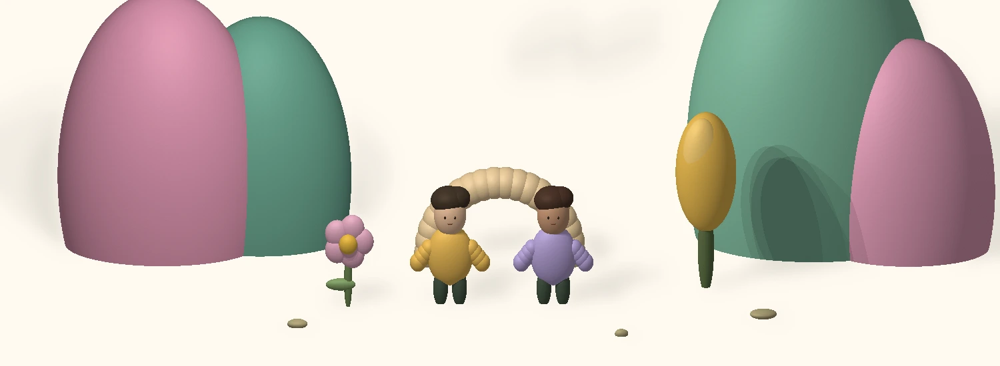

先有清晰条件，
再开始寻找。
用行业与团队规模，圈定这一次想理解的客户，而不是追求更多无关记录。
把散落的资料，连接成完整的认识。
从理想客户，到下一次有意义的联系。

把理想客户画像变成可以核对的条件。下面是六家虚构公司的本地研究样本。
| 公司 / 规模 | 行业 | 研究资料 |
|---|
只查询本地固定资料。不检索网络、不生成联系人。
公司规模、团队工具、眼下的需求。比起一长串名字，我们更在意为什么这家公司适合你。
用行业与团队规模，圈定这一次想理解的客户，而不是追求更多无关记录。
本地资料未收录的字段会明确标出，不把空缺包装成自动生成的答案。